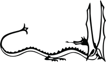

The Song Of The Lonely Mountain
Far over the misty mountains cold
To dungeons deep and caverns old
We must away ere break of day
To seek the pale enchanted gold.
The dwarves of yore made mighty spells,
While hammers fell like ringing bells
In places deep, where dark things sleep,
In hollow halls beneath the fells.
For ancient king and elvish lord
There many a gleaming golden hoard
They shaped and wrought, and light they caught
To hide in gems on hilt of sword.
On silver necklaces they strung
The flowering stars, on crowns they hung
The dragon-fire, in twisted wire
They meshed the light of moon and sun.
Far over the misty mountains cold
To dungeons deep and caverns old
We must away, ere break of day,
To claim our long-forgotten gold.
Goblets they carved there for themselves
And harps of gold; where no man delves
There lay they long, and many a song
Was sung unheard by men or elves.
The pines were roaring on the height,
The winds were moaning in the night.
The fire was red, it flaming spread;
The trees like torches blazed with light.
The bells were ringing in the dale
And men they looked up with faces pale;
The dragon's ire more fierce than fire
Laid low their towers and houses frail.
The mountain smoked beneath the moon;
The dwarves they heard the tramp of doom.
They fled their hall to dying fall
Beneath his feet, beneath the moon.
Far over the misty mountains grim
To dungeons deep and caverns dim
We must away, ere break of day,
To win our harps and gold from him!
